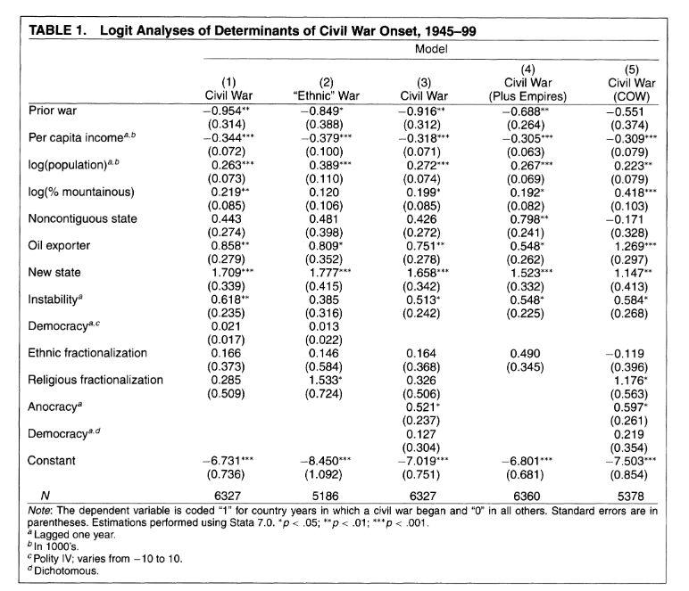

library(peacesciencer)
library(dplyr)
conflict_df <- create_stateyears(system = 'gw') |>
filter(year %in% c(1946:1999)) |>
add_ucdp_acd(type=c("intrastate"), only_wars = FALSE) |>
add_democracy() |>
add_creg_fractionalization() |>
add_sdp_gdp() |>
add_rugged_terrain()
glimpse(conflict_df)Regression Tables
What’s in a Regression Table?

Load Data
05:00
Run Model
conflict_model <- glm(ucdponset ~ ethfrac + relfrac + v2x_polyarchy +
rugged + wbgdppc2011est + wbpopest,
data= conflict_df,
family = binomial(link="logit"))03:00
View with summary()
summary(conflict_model)
Call:
glm(formula = ucdponset ~ ethfrac + relfrac + v2x_polyarchy +
rugged + wbgdppc2011est + wbpopest, family = binomial(link = "logit"),
data = conflict_df)
Coefficients:
Estimate Std. Error z value Pr(>|z|)
(Intercept) -5.69260 1.40788 -4.043 5.27e-05 ***
ethfrac 0.80005 0.38072 2.101 0.03560 *
relfrac -0.39138 0.41673 -0.939 0.34764
v2x_polyarchy -0.60161 0.50879 -1.182 0.23704
rugged 0.06413 0.07603 0.843 0.39897
wbgdppc2011est -0.37188 0.12059 -3.084 0.00204 **
wbpopest 0.29318 0.06735 4.353 1.34e-05 ***
---
Signif. codes: 0 '***' 0.001 '**' 0.01 '*' 0.05 '.' 0.1 ' ' 1
(Dispersion parameter for binomial family taken to be 1)
Null deviance: 1182.5 on 6150 degrees of freedom
Residual deviance: 1126.7 on 6144 degrees of freedom
(885 observations deleted due to missingness)
AIC: 1140.7
Number of Fisher Scoring iterations: 7Now call View() on conflict_model. What do you see?
View results with broom
The tidy() function takes the information in the list and transforms it into a tibble. Call View() on tidy_model to confirm…
# A tibble: 7 × 7
term estimate std.error statistic p.value conf.low conf.high
<chr> <dbl> <dbl> <dbl> <dbl> <dbl> <dbl>
1 (Intercept) -5.69 1.41 -4.04 0.00005 -8.44 -2.92
2 ethfrac 0.800 0.381 2.10 0.0356 0.0670 1.56
3 relfrac -0.391 0.417 -0.939 0.348 -1.22 0.420
4 v2x_polyarchy -0.602 0.509 -1.18 0.237 -1.61 0.387
5 rugged 0.0641 0.0760 0.843 0.399 -0.0923 0.207
6 wbgdppc2011est -0.372 0.121 -3.08 0.00204 -0.613 -0.140
7 wbpopest 0.293 0.0673 4.35 0.00001 0.162 0.42603:00
How close are our results to F&L?
Discuss with a neighbor…
# A tibble: 7 × 7
term estimate std.error statistic p.value conf.low conf.high
<chr> <dbl> <dbl> <dbl> <dbl> <dbl> <dbl>
1 (Intercept) -5.69 1.41 -4.04 0.00005 -8.44 -2.92
2 ethfrac 0.800 0.381 2.10 0.0356 0.0670 1.56
3 relfrac -0.391 0.417 -0.939 0.348 -1.22 0.420
4 v2x_polyarchy -0.602 0.509 -1.18 0.237 -1.61 0.387
5 rugged 0.0641 0.0760 0.843 0.399 -0.0923 0.207
6 wbgdppc2011est -0.372 0.121 -3.08 0.00204 -0.613 -0.140
7 wbpopest 0.293 0.0673 4.35 0.00001 0.162 0.42612:00
Could we get closer to F&L?
- Got to the peacesciencer documentation
- How close are our data to F&L’s?
- Could we change something to better approximate their results?
12:00
Could we improve the model?
- Are there predictors in the
peacesciencerpackage that were not available to F&L? - Would adding them improve the fit?
- Are there some predictors that should be removed?
12:00